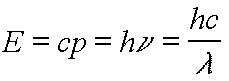
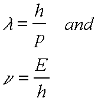
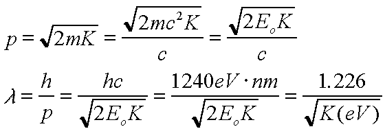

Matter Waves and the de Broglie Hypothesis
The Bohr postulates were more or less without justification.
The concept of a stationary state
seemed useful, but the reasons for the existence of such a thing
were not readily apparent. The view
of particles as classical objects did not seem to imply stationary
states. However, such is not really
the case for wave-like quantities such as light. It was known,
for example, that light could make
'standing wave cavities' which looked something like what a stationary
state should look like. In
one dimension, such a standing wave cavity is easy to comprehend.
We have light of wavelength
lambda that must 'fit' inside a box of length L. This only
happens when an integral number of
waves fits within the box. Otherwise, the wave would 'interfere'
with itself. This leads to a natural
quantization - only certain wavelengths are allowed in the box.
Lasers are predicated upon this
fact. All of this begs the issue of the wave-particle duality
of light, but remember that light does in
fact exhibit both wave and particle properties.
The de Broglie Hypothesis
Recall the Planck/Einstein energy/momentum/frequency relationships for photons/light waves:

These relationships embody the essence of the wave-particle
duality - they relate wave-like
quantities like frequency and wavelength to particle-like quantities
like photon energy and
momentum. Given that light has particle-like qualities, it may
not be so surprising that particles
might have wave-like properties. After all, we can think of a
photon as a particle with zero rest
mass. In his doctoral thesis, de Broglie had the insight that
if one could associate wave-like
properties with particles, then the quantization postulated by
Bohr in his explanation of atomic
spectra might be justified. de Broglie hypothesized relationships
for particles which are formally
very similar to those above for light:

A significant difference, of course, is that the photon relationship
between energy and momentum,
E = cp, is more complicated for particles. Probably the most revolutionary
aspect of the de Broglie
hypothesis is the first of these equations - that every particle
has a wavelength which is inversely
related to its momentum.
This hypothesis, which is now generally accepted, obviously
does not match our everyday
experience - massive particles do not oscillate like a wave. Let
us see why.
Find the de Broglie wavelength of an object with a mass of
10^-6 g and a speed of 10^-6 m/s. Note
that this is a very small particle that is moving very slowly
and thus has very small momentum. We
would expect that the de Broglie wavelength might be substantial.
In fact, given that h =
6.6x10^-34 J s, we find that the de Broglie wavelength is 6.6x10^-19
m! This is four orders of
magnitude smaller than diameter of a typical nucleus (not an atom,
which is 6 orders of magnitude
larger yet). The value of h is just so small that anything larger
than an atom will always have an
unimaginably small de Broglie wavelength. It would be difficult
indeed to detect such a small
wavelength.
Quite the opposite is true for a low energy electron. Consider,
for example, an electron with an
energy of 13.6 eV. We have found that this is the binding energy
of the n = 1 electron in hydrogen,
and it is thus an energy which is typical of electrons in atoms.
This energy is small compared to the
rest mass of the electron, so we can calculate the momentum classically:

Substituting K = 13.6 eV, we find a de Broglie wavelength of
0.33 nm = 3.3 Angstroms. This is
small, but it is comparable to atomic dimensions so that it can
in fact be detected and measured,
as we will discuss and demonstrate shortly.
De Broglie Waves in Atoms
Let us presume that the de Broglie is correct, and that the
electron orbiting the nucleus in
hydrogenic atoms follows this relationship. In order to have a
'stationary state', we need to satisfy
the same sort of quantization condition as light in the 1D box
discussed above. The difference is
that our box is not linear, it is in a circle. Specifically, we
require that we have an integral number
of de Broglie wavelengths in one orbit:
The left side of this equation is, for a circular orbit, simply
the angular momentum. We thus
recover the Bohr quantization hypothesis from the de Broglie relationship.
You should not take this calculation too seriously. Despite
its ad hoc nature, however, it must have
some bearing on reality. The wave nature of the electron must
be related to the quantization
apparent in atomic spectra. In later years, you will learn much
more about this relationship - this
is the basis of quantum mechanics.